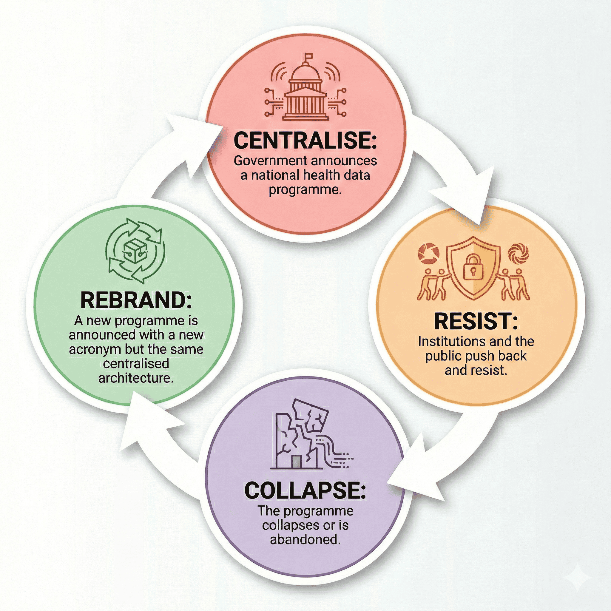
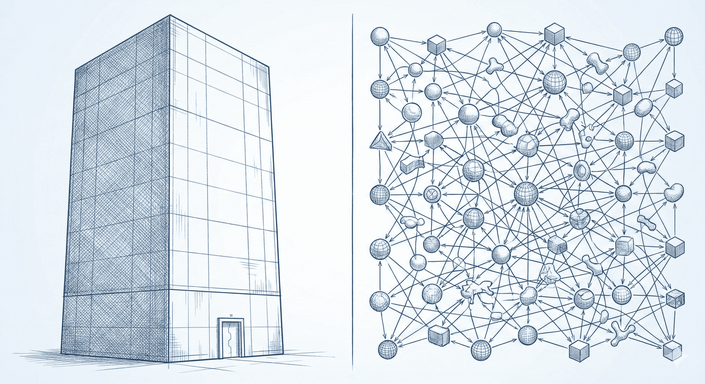
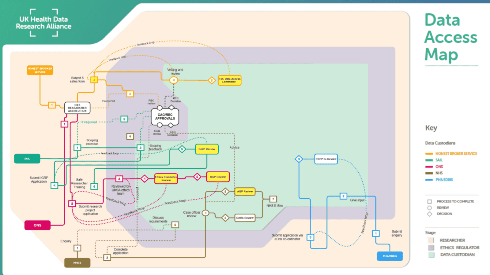
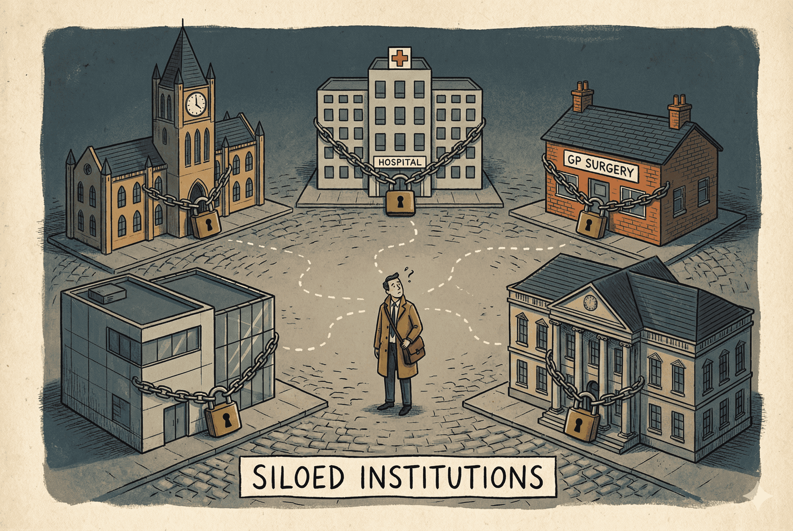
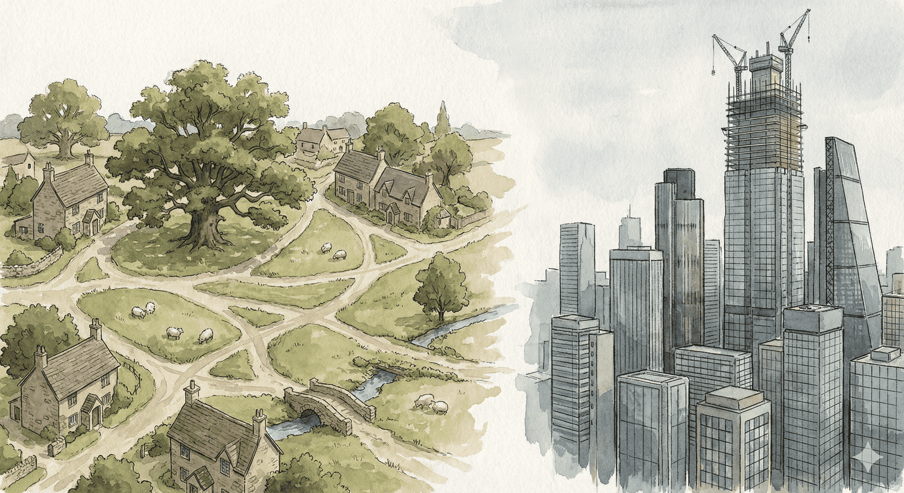

In 60 Seconds
What: OpenTRE proposes that the HDRS invest its £600 million in open interoperability protocols (shared cataloguing rules for health data) rather than another centrally operated platform.
Why: The UK has spent over two decades and billions of pounds on centralised health data programmes (NPfIT, care.data, GPDPR, FDP) that follow the same pattern: centralise, meet resistance, retreat, rebrand. The problem is not technology. It is the absence of shared rules.
What should be done now: Five Bermuda-style mandates (24-hour governance disclosure, federated-first architecture, open protocol conformance, 48-hour credential portability, and governance transparency) would give the HDRS a durable foundation that survives political cycles.
▶ Key Terms & Acronyms
TRE: Trusted Research Environment. A secure computing facility where approved researchers analyse sensitive data without the data leaving the facility.
SDE: Secure Data Environment. The NHS-specific term for a TRE within the NHS ecosystem.
HDRS: Health Data Research Service. The UK government's £600 million programme to improve health data access for research.
OMOP: Observational Medical Outcomes Partnership Common Data Model. A standardised schema for health data.
FHIR: Fast Healthcare Interoperability Resources. An HL7 standard for exchanging healthcare information electronically.
GA4GH: Global Alliance for Genomics and Health. An international standards body for genomic and health data sharing.
ODRL: Open Digital Rights Language. A W3C standard for expressing permissions and obligations over data.
DUO: Data Use Ontology. A GA4GH standard for machine-readable data use conditions.
OHDSI: Observational Health Data Sciences and Informatics. A multi-stakeholder network using the OMOP model across 54 countries.
SATRE: Standard Architecture for Trusted Research Environments. A UK specification for TRE design.
DARE UK: Data and Analytics Research Environments UK. A UKRI programme building national TRE infrastructure.
FDP: Federated Data Platform. NHS England's £330 million data analytics platform.
NPfIT: National Programme for IT. The £12.7 billion NHS IT programme (2002-2011), largely abandoned.
The Catalogue and the Crisis
A clinical researcher at University College London is studying antibiotic resistance patterns across three regions of England. The data she needs exists in three separate Secure Data Environments. She has ethics approval. She has funding. She has a clear research question. What she does not have is a way to query across all three environments without negotiating a separate data access agreement with each one, a process that will take, by her own estimate, between nine and fourteen months per SDE[?]. By the time she can run the analysis, her grant will have expired. This is exactly the kind of problem OpenSAFELY solved during COVID-19: code travelling to 58 million GP records rather than records travelling to researchers. The architecture works. The governance interoperability does not yet exist.
This is not a technology problem. It is a cataloguing problem. The data exists. The shared rules for accessing it do not. The same problem existed in the library world before 1841, when a political refugee published the rules that eventually connected every library on earth.
In 1823, a young Italian revolutionary named Antonio Panizzi arrived in England. He had been sentenced to death in absentia for conspiracy against the Duke of Modena. He spoke little English. He had no money, no connections, and no prospects. Within fourteen years he would become Keeper of Printed Books at the British Museum Library, and in 1841 he would publish 91 cataloguing rules that became the foundation of every library interoperability standard that followed.
Before Panizzi, every library was an island. Each institution catalogued its holdings in its own way, using its own conventions, its own entry formats, its own filing logic. A scholar who could navigate the Bodleian's catalogue was lost in the British Museum's. Finding a book meant knowing the local system. There was no shared language for describing what a library held.
Panizzi's insight was that the problem was not the buildings or the collections. The problem was the absence of shared rules. His 91 rules specified how to record an author's name, how to handle anonymous works, how to cross-reference editions, how to standardise titles. They were, in modern terms, a protocol: a set of agreements about representation that allowed any two institutions to understand each other's holdings without merging their collections.
The rules did not require libraries to reorganise their shelves, rebuild their reading rooms, or surrender their collections to a central repository. Each library kept its own governance, its own physical arrangements, its own traditions. Only the catalogue entries (the metadata describing what was held and how to find it) needed to conform to a shared standard. The books themselves never left the shelf. A scholar could discover what existed anywhere; the sensitive content stayed where it belonged. In OpenTRE's terms: the catalogue (governance metadata) travels; the patient data (the book) never does.
That lineage is direct and unbroken. Panizzi's rules (1841) led to Charles Ammi Cutter's Rules for a Dictionary Catalog (1876) and, in the same year, Melvil Dewey's Decimal Classification, which gave every library a shared language for organising knowledge by subject. Cutter standardised how to describe a book; Dewey standardised where to put it. Together they solved both halves of the interoperability problem. That dual tradition led to the Anglo-American Cataloguing Rules (1967) and to Henriette Avram's MARC format at the Library of Congress (1966), which gave cataloguing a machine-readable encoding. MARC led to Z39.50, the federated query protocol that lets a researcher in London search the catalogue of a library in Tokyo without either institution surrendering its data. Z39.50 led to WorldCat, a federated discovery catalogue spanning tens of thousands of libraries across 170 countries. And the entire system rests on persistent identifiers like ISBN and ISSN, which let any catalogue entry point unambiguously to the same work.
A political refugee wrote the rules that let every library in the world talk to each other. No central warehouse was required. No single institution controlled the system. The protocol was the agreement. Everything else was implementation.
I find myself thinking about Panizzi's rules as I watch the UK prepare to spend £600 million on a Health Data Research Service. The NHS has a cataloguing problem. Institutions that hold health data are essentially running incompatible catalogues: bespoke governance agreements, variable access processes, months-long negotiations, each request treated as a unique transaction. The data exists. The shared rules do not.
Panizzi built the Round Reading Room and expanded the collection, but his lasting contribution was the 91 rules that made every catalogue interoperable. The UK's health data infrastructure needs the same kind of reform.
The Health Data Research Gateway, which we built at HDR UK, was the first metadata catalogue of health research datasets across all four UK nations. We also began aligning governance processes by developing a unified Data Access Request process using the Five Safes framework. Without a political mandate, however, uptake has been hard. The challenge of interoperable governance remains.
Key Takeaway
The NHS has a cataloguing problem, not a technology problem. Shared rules for describing data access conditions, not more buildings, are what connect institutions.
The Pattern That Keeps Repeating

Every major UK health data programme has tried to build the British Library. None of them thought to write the cataloguing rules first.
The National Programme for IT (2002-2011) tried to build a single electronic health record system for the entire NHS. Cost: £12.7 billion. Result: largely abandoned. Twelve billion pounds, and the scale of that failure should have been instructive. The Public Accounts Committee's verdict: "an overambitious and unwieldy centralised model." It was the equivalent of demanding that every hospital in England physically relocate its records to a single building. The British Library's St Pancras building, by comparison, cost £511 million and took 35 years from conception to completion (1962-1997). NPfIT tried to build something vastly more ambitious in a fraction of the time.
Care.data (2013-2016) tried to extract GP data into a central repository. It cost the taxpayer £8 million. 1.5 million patients opted out. Programme cancelled. The library equivalent: photocopying every book in every local library and shipping the copies to a central warehouse, without asking the borrowers.
GPDPR (2021) tried the same thing with a different acronym. Within weeks of announcement, opt-outs nearly doubled (June-July 2021). 1.27 million additional people refused in a single month. Programme paused indefinitely.
The GPES Data for Consented Research Directions 2026 represent the latest iteration. On 10 February 2026, the Secretary of State directed NHS England to share GP health records with approved research studies where participants have given explicit consent. The consent model is a real step forward. But look beneath it: the same GDPPR (GPES Data for Pandemic Planning and Research) data pipeline, originally justified under pandemic emergency powers, repurposed for a new purpose. Data still flows from GP systems to NHS England to study platforms. The architecture remains centralised even when the consent is not. OpenTRE's protocol layer could make this Directions work better: machine-readable consent verification, automated Type 1 objection enforcement, and interoperable SDE access. The result would be auditable, computable governance in place of a manual multi-stage approval process.
The Federated Data Platform (2023-present), despite its name, is a centrally mandated system under a £330 million single-vendor contract. Think of it as building a grand reading room with a single proprietary catalogue system: excellent for patrons within its walls, and useful for direct care analytics within participating trusts. But a single reading room cannot serve every community. Several trusts with mature local capabilities have concluded it would reduce their functionality. Greater Manchester, which built its own interoperable platform, declined entirely.
The FDP is a useful node, one that needs protocol interfaces to participate in a wider ecosystem.
And then there is the British Library itself. In October 2023, a Rhysida ransomware attack took its digital services offline for months and cost an estimated £7 million. Everything was concentrated in one infrastructure; when it fell, everything fell with it. The physical inter-library loan network, federated by design, kept working. The lesson is hard to miss.
Federation distributes risk rather than eliminating it. A protocol-based ecosystem must address the expanded attack surface through mandatory security conformance testing, incident response coordination across SDEs, and disclosure control at the aggregation layer. The HDRS should fund a shared security operations capability for the SDE Network.
Four programmes. Over two decades. Billions of pounds. Partial successes (the Spine, Summary Care Record) but a recurring pattern: build a bigger library, meet resistance, retreat, rebrand. The UK keeps trying to centralise the collection when what it needs is to standardise the catalogue.
The Centralisation Cycle Service-based
- NPfIT (2002-2011): £12.7B, largely abandoned
- Care.data (2013-2016): £8M, 1.5M opt-outs, cancelled
- GPDPR (2021): 1.27M opt-outs in one month, paused
- FDP (2023-): £330M single-vendor, trusts declining
Protocol Successes Protocol-based
- Email (SMTP, 1982): billions of users, no central operator
- The Web (HTTP, 1991): survived seven US presidents
- OHDSI (OMOP, 2014): 974M records, 54 countries, volunteer-governed
- OpenSAFELY (2020): 58M GP records, code-to-data at scale
A protocol layer is not a repudiation of past investment. It is an insurance policy against platform obsolescence. The £12.7 billion spent on NPfIT, the £330 million committed to the FDP, the existing SDE Network: none of these need to be abandoned. They need protocol interfaces that protect the public's investment by making each system interoperable with the next, regardless of which vendor built it or which government funded it. The alternative (another generation of proprietary platforms) is the real sunk cost.
There is a middle way between the centralisation that provokes resistance and the fragmentation that prevents research. Protocol-based federation preserves NHS Trust sovereignty (every Trust keeps its data, its governance, its Caldicott Guardian's authority) while enabling national-scale queries across the entire SDE Network. Local control and national reach are not opposites. They are two sides of the same protocol. For UK policymakers, this is the win-win: Trusts retain the autonomy they will fight to protect, while HDRS delivers the cross-institutional research capability that justifies the £600 million investment.
Key Takeaway
Centralised services follow a cycle: build, resist, collapse, rebrand. Protocols follow a different pattern: agree on rules, let institutions implement, survive political change. The UK's £600 million investment is a generational opportunity. It should be used to establish the rules of the grid, ensuring our infrastructure survives political cycles rather than being consumed by them.
What OpenTRE Proposes Instead

OpenTRE, the Open Trusted Research Ecosystem, is a protocol stack, not a product. You do not procure it. It complements the HDRS by formalising how the funded environments actually talk to each other. The HDRS funds the ecosystem. OpenTRE provides the rules.
Two terms recur throughout this argument. A Trusted Research Environment (TRE) is a secure computing facility where approved researchers can analyse sensitive data without the data leaving the facility. A Secure Data Environment (SDE) is the NHS-specific term for the same concept: a TRE within the NHS ecosystem, governed under NHS data governance frameworks. The UK's SDE Network currently comprises twelve regional and national SDEs, each operating independently.
What changes architecturally
The philosophy is simple: the minimum shared infrastructure for a federated health data ecosystem is a set of interoperable protocols, not a centrally operated service. This does not mean "no services": real health data infrastructure needs identity providers, support desks, reference implementations, and patient engagement operations. The point is: standardise the seams, don't centralise the substance. Services are welcome. But they must interoperate through open protocols rather than monopolise through proprietary interfaces.
This is what library standards achieved. Panizzi did not ask every library to merge its collection into one building. He published rules that any existing catalogue could adopt. The library world built on this: MARC gave cataloguing a machine-readable format, much as OMOP and FHIR give health data a common structure today. Z39.50 let a researcher in London search a catalogue in Tokyo; OpenTRE's protocol stack lets a researcher in Manchester query data held in Birmingham, with Layer 4 -- Interoperable Governance, the narrow waist of the protocol stack's hourglass architecture -- determining computationally whether the access is permissible. (Layer 4 defines how data access conditions are expressed in machine-readable formats using ODRL and DUO, so that policies can be matched automatically across institutions.) The Inter-Library Loan system sends the request to where the book lives. WorldCat provides federated discovery across tens of thousands of libraries. Every time, the architecture is the same: agree on the rules, let each institution implement them locally, and never build a central warehouse.
There is an obvious objection: catalogue records are public; patient records are not. The library analogy holds at the level of architecture, not content. MARC standardised how to describe a book. Layer 4 standardises how to describe the conditions under which a patient's data may be accessed. The information protected is different. The interoperability problem is the same.
Consider the email analogy: Gmail, Outlook, and ProtonMail compete fiercely but interoperate seamlessly because they all implement the same protocol. The competition is real. The interoperability is mandatory.
Now think about the NHS SDE Network. Twelve Secure Data Environments, each with different governance processes, different committee structures, different interpretations of what good looks like. A researcher approved by the London SDE cannot automatically access data in the North West SDE. The same analysis pipeline cannot run across three regions without bespoke agreements with each.

Research has documented how this fragmentation imposes real costs: duplicated governance reviews, inconsistent access timelines, and wasted researcher effort navigating incompatible systems.[1] Subsequent mapping quantified it further: 78% of NHS Digital data consumers, including 89% of commercial users, opted for physical data transfer outside SDEs rather than working within secure environments.[2] Most data interactions do not fulfil Five Safes best practices. The infrastructure on the ground looks quite different from the infrastructure on paper.
HDR UK's own Data Access Map, which visualises data access routes as lines on a transport network, is an implicit acknowledgement of the problem: if the system were interoperable, researchers would not need a tube map to navigate it. The map documents the fragmentation; machine-readable governance policies would resolve it.

OpenTRE proposes seven layers of interoperable protocols. The most critical layer, and the one nobody wants to fund because it is invisible, is Layer 4: Interoperable Governance.

What Layer 4 does
Today: a researcher submits a lengthy application to an SDE. A data access committee meets monthly. They review the application against a PDF policy document. They request clarifications. The researcher responds. The committee meets again. Approval arrives four to twelve months later. The researcher repeats this process for every SDE that holds relevant data.
With Layer 4: the same SDE publishes its access conditions in a machine-readable format. The same committee still sets those conditions; nothing about their authority changes. But when a researcher presents their credentials and states their purpose, a conformant system can check in seconds whether the application matches the published policy. If it does: automatic approval for the straightforward case. If it does not: routed to the committee for human review. Based on OHDSI network benchmarks, where standardised queries across federated nodes execute in days, the target is that the majority of routine access requests are processed on a similar timeline -- not months. The remainder, the cases that require judgement, get more of the committee's attention, not less.
Think of it as a WorldCat for health data governance: federated discovery, not of books, but of permissible research pathways. A researcher can ask not just "does this dataset exist?" but "can I access it, and what would I need to do?"
When two SDEs publish conflicting policies for the same query, the most restrictive policy wins. That is not a design preference; it is a legal necessity. No automated system should grant access that any participating institution has prohibited. Machine-readable governance encodes that principle. It does not override human judgement.
Nobody is proposing we replace ethics committees with machines. The point is narrower: automate the routine cases where credentials, purpose, and data all clearly match existing policy, and free human reviewers for the cases where judgement actually matters.
Nor does Layer 4 require full automation on day one. The first step is simply publishing machine-readable policies. An SDE that publishes its access conditions in a standard format provides immediate value before any automated decision-making is in place: researchers can search for "access-friendly" datasets, compare requirements across SDEs, and identify the fastest path to approval. Put the catalogue online first; automate the lending desk later. Transparency alone -- the ability to compare policies computationally across every SDE in the network -- is already a step change from today, where researchers must telephone each institution to discover what the rules even are.
To a researcher at UCL, Layer 4 is not a protocol specification. It is the difference between a project started in January and one still waiting for approval in December. It is the difference between a rare disease study that includes patients across three regions and one that can only see the patients in a single trust. The protocol is invisible. The months of a researcher's life that it returns are not.
What patients experience
For patients, the proposition is concrete: your data stays within your local NHS system, not extracted to a central warehouse. Only the research question travels to the data. Only aggregated, disclosure-checked results return. In specific cases, governed data movement to a regional Secure Data Environment may be necessary, but that is the exception, not the rule, and it is subject to the same protocol-based governance.
What exists already
Every component technology exists today. GA4GH Passports already federate researcher identity across dozens of countries, much as an inter-library loan card lets a reader in Manchester borrow from a library in Edinburgh. The concept was first articulated as "Library Cards" for simplifying research access to genomics and health data, a direct precursor to the GA4GH Passport model.[3] DUO is a ratified standard. ODRL is a W3C recommendation. The European Health Data Space regulation mandates this kind of cross-border access by 2029. (The UK's EU data adequacy decision, currently under review, will determine whether UK SDEs can participate in EHDS-compliant federated queries at all. Protocol conformance is necessary but not sufficient without legal interoperability.) What is missing is the architectural vision to compose them into a coherent stack, and the political will to prioritise protocols over procurement.
Open protocols create something centralised platforms cannot: a marketplace of tools on top of a grid of data. When the protocol is open, any team -- academic, commercial, or NHS -- can build analytics, dashboards, or AI applications that work across the entire SDE Network. No single vendor controls the application layer. No procurement dependency gates innovation. The Bermuda Principles showed how: by making sequence data openly accessible through standard protocols, they allowed thousands of teams to build tools the original funders never imagined. The same permissionless innovation should apply to health data analytics: permissionless at the application and tooling layer, never permissionless data access. Every query still passes through the governance layer; every result is disclosure-checked before it leaves the SDE.
This is the same dynamic that made the open Web productive: HTTP did not prescribe what you could build on it. A single-vendor model like the FDP concentrates the application layer behind one proprietary interface. A protocol model opens it to everyone -- while the governance protocol ensures that "open tooling" never means "open data." The UK Life Sciences sector depends on exactly this kind of open competition atop governed access.
Machine-readable governance (ODRL/DUO) automates access decisions. It also creates auditability, which matters more. Every policy decision, every access grant, every credential check is logged in a transparency log that any auditor, patient representative, or Information Commissioner can inspect. This is not theoretical: it is a concrete implementation of the accountability that the public has been demanding since care.data. The transparency log is the selling point that no centralised platform has been able to offer, because centralised platforms concentrate both power and opacity.
What HDRS must fund
What OpenTRE is, and is not
- IS a complement to the HDRS, not a replacement. OpenTRE formalises the interoperability layer that HDRS-funded environments need to work together. The HDRS funds and convenes the ecosystem; OpenTRE provides the shared rules.
- IS a protocol standard that lets existing trusted environments talk to each other while each keeps its own governance.
- IS designed for hybrid infrastructure: service layers (identity, testing, support) are expected and welcome, provided they interoperate through open protocols.
- IS accountable to patients: the National Data Opt-Out is respected at the protocol level. Patient advisory boards shape governance policies before they become machine-readable. Transparency logs ensure every access decision is auditable.
- Not centralising data. Data stays where it is. Only research queries travel to the data. Only aggregated, disclosure-checked results return.
- Not removing governance oversight. Machine-readable governance automates routine compliance checks. Ethics committees and Caldicott Guardians retain full authority over edge cases and novel requests.
- Not opening data to commercial interests. Protocols are open standards, not a marketplace. Commercial services build on top, subject to the same governance.
- Not replacing existing systems. Existing TREs, SDEs, and the FDP participate by adding protocol interfaces. "Wrap and evolve," not "rip and replace."
- Not claiming central services are never right. Some functions genuinely belong at the centre: national identity infrastructure, conformance testing, reference implementations, security operations, and patient engagement. The principle is protocols first, not protocols only. Central services are welcome where they serve the network; they become problematic when the network must serve them.
Key Takeaway
OpenTRE is a set of shared rules, not a product to procure. It standardises how SDEs talk to each other (the governance interfaces) while each keeps its own data, its own governance, and its own operational independence.
The Numbers That Matter
The comparison HDRS planners need:
This is a structural comparison, not a like-for-like operational benchmark. OHDSI and NPfIT serve different purposes at different scales. The comparison is not about which is "better"; it is about how the protocol model scales differently, sustains differently, and fails differently than the service model.
OHDSI Protocol-based
- Nearly a billion patient records
- 544 data sources across 54 countries, 4,700 collaborators across 88 countries
- Volunteer-governed
- No central data warehouse
- Minimal central funding
NPfIT Service-based
- One country
- 60 million patients
- Centrally mandated
- Single EHR system
- £12.7 billion spent
Protocol governance costs a fraction of platform operations. But implementation costs are borne by participants, and that is the point: the cost is distributed, not concentrated. The IETF governs the protocols that run the entire internet on $14 million a year. The internet itself costs trillions to operate. But the coordination layer, the shared rules, has survived seven US presidents. NPfIT survived three UK prime ministers. The billions spent by companies building on internet protocols are not captured in governance budgets. The lesson is about the sustainability of the shared coordination layer, not that health data interoperability will be inexpensive.
Meanwhile, Finland's Findata, the most mature centralised health data access authority in Europe, relies substantially on direct government budget funding. Fee income covers only a fraction of operating costs (Findata Annual Report, 2024). This is the sustainability trap of the service model: you are always one spending review away from collapse.
A rare disease researcher, today and tomorrow
Today
A rare disease researcher studying a condition affecting 200 UK patients must negotiate separate data access agreements with each of the NHS SDEs where those patients might be found. That process typically takes 12-18 months per SDE.
With OpenTRE
The researcher presents credentials once, governance policies are computationally matched across all participating SDEs simultaneously, and federated analytics run in situ with only aggregated results returned. Total time: weeks.
The 200 patients become statistically visible for the first time. Not because data moved, but because governance interoperated.
A funder or commissioner, today and tomorrow
Today
Paying for 40 siloed databases, each with its own governance process, its own technical stack, its own support contract. Cross-institutional queries require bespoke bilateral agreements. Every new study is a new negotiation.
With OpenTRE
Paying for 1 interoperable grid. Each institution retains its data and governance. Shared protocols mean every new study runs across the entire network without new procurement. Funding goes to research, not re-negotiation.
Same investment. Exponentially more research. The protocol layer turns linear spending into network returns.
A fair question: can federated analytics actually work at NHS scale? The evidence is early but real. OpenSAFELY demonstrated during COVID-19 that research queries could run against millions of GP records without extracting the data, producing peer-reviewed results in Nature across 17 million patients initially, and later scaling to 58 million. Its approach, code to data rather than data to code, is the federated-first principle in practice. Its open-source codebase demonstrates that federated analytics at national scale is not theoretical. But OpenSAFELY carries a structural problem. It dismissed the existing ecosystem -- the HDR Gateway catalogue, the Five Safes DAR process, TRE infrastructure, GA4GH standards, Data Use Registers -- and invented its own protocol from scratch. If you dismiss everything that already exists, you can optimise for speed of delivery (which the pandemic demanded), but you do not optimise for scale. The goal is not to replicate OpenSAFELY's isolation, but to learn from its speed while building on the interoperability standards that already exist. Across the Channel, the European Health Data and Evidence Network (EHDEN), an IMI2-funded initiative, has mapped 210 data sources across 30 countries to the OMOP Common Data Model, covering over 850 million patient records. EHDEN runs federated analytics without centralising data: code travels to each node, and only aggregated results return. The next step is extending this model beyond individual platforms into an interoperable network.
The harder gap is adoption support. Every component standard exists, but an under-resourced NHS trust cannot implement OMOP mappings, ODRL policy files, and GA4GH Passport endpoints without dedicated investment. The OHDSI network addresses this through an "invest once, query many" model: institutions bear the upfront cost of mapping their data to the Common Data Model, then participate in every subsequent federated study at near-zero marginal cost. The HDRS should fund adoption tooling, reference implementations, and dedicated data engineering support for participating trusts. Protocols without adoption support are just PDFs.
The protocol model shifts technical burden (ETL pipelines, OMOP mappings, FHIR endpoints) from the centre to the edge, to the institutions that hold the data. This is a feature, not a bug: it preserves sovereignty and distributes cost. But it requires success-based funding: funding institutions specifically to achieve protocol compliance, rather than funding central hubs to aggregate their data. The HDRS should allocate dedicated grants for each SDE to reach conformance, with payment tied to passing interoperability tests, not to shipping data upstream. Fund the edge to join the grid, not the centre to absorb the edge.
The hardest constraint is not technology but people. NHS trusts face acute shortages in data engineering, clinical informatics, and protocol implementation skills. The HDRS must fund not just reference implementations but dedicated implementation support teams, modelled on OHDSI's network of site leads or EHDEN's data partner certification programme, to make protocol adoption achievable for under-resourced institutions.
Key Takeaway
Protocol governance costs a fraction of platform operations and survives political change. But protocols without adoption support are just PDFs. The HDRS must fund both the shared rules and the implementation support that makes compliance achievable.
The Deeper Problem: Incentives, Not Just Architecture

But I have been understating something: protocols alone are not enough.
The pre-Panizzi library system was not just inconsistent. It was incentive-aligned for the librarians. Every proprietary cataloguing scheme was a justification for local expertise. Every incompatible system protected a curator's authority. Standardisation required external pressure: first from the British Museum's trustees, later from funders who made shared standards a condition of support, just as the EU had to mandate GSM in 1987 to force mobile interoperability across Europe.
Health data faces the same structural problem. Every Caldicott Guardian makes the same impossible calculation: the benefit of sharing is diffuse and delayed, while the cost of a breach is immediate and career-ending. Data custodians, researchers, GP practices, and vendors are all rationally choosing not to cooperate. The companion manifesto, From Protocols to Rights, analyses this incentive trap in depth. The short version: collectivise the risk through a shared liability pool modelled on NHS Resolution, which already pools clinical negligence risk across the entire NHS.
There is also a structural incentive not to share. A data custodian must get it right every single time; a bad actor only has to get it right once. For academic and industry data generators, the incentives to publish and commercialise are misaligned with the incentive to share access. Until protocols make sharing the path of least resistance -- and collective risk-sharing absorbs the downside of individual exposure -- rational custodians will continue to default to "no."
Protocols provide the shared catalogue; regulation provides the forcing function; and collective risk-sharing provides the incentive. The full vision goes further: from protocols (the shared standards) through a governed commons (modelled on Elinor Ostrom's design principles for managing shared resources, Governing the Commons, 1990) to a Health Data Constitution with enforceable rights. Protocols are the first step. They are not the destination.
For researchers, the incentive failure is personal. A 14-month negotiation to access three SDEs is not an abstraction; it is a grant clock ticking down. GA4GH Passports are not a technical curiosity; they are a Passport to Science, the end of the credentialing nightmare where a researcher approved by one institution must re-prove their identity, training, and ethical bona fides at every subsequent institution.
A Researcher's Bill of Rights
Any researcher working with HDRS-funded data should be able to expect:
- Cross-portal search. Discover what data exists across all SDEs from a single query.
- Automated access for routine queries. When credentials, purpose, and data clearly match published policy, approval in days, not months.
- Portable credentials. Approved once, recognised everywhere, via GA4GH Passport-compatible infrastructure.
- Transparent governance logs. Know exactly where your application is, why it was approved or denied, and what conditions apply.
- Time-to-science measured in days, not months. The grant clock should fund research, not re-negotiation.
Time-to-Science
Negotiation, approval, and onboarding vs. protocol-based access
The Bermuda Precedent
This week, between 25-28 February 2026, scientists are gathering at the Hamilton Princess Hotel in Bermuda for the 30th anniversary of the agreement that opened the Human Genome Project to the world.
The original Bermuda Principles, adopted 25-28 February 1996 at that same hotel, proved that the multi-stakeholder prisoner's dilemma can be solved. They are a direct precedent for what the HDRS should become.
The UK already knows how this works. The Wellcome Trust and the Sanger Centre contributed roughly a third of the human genome under the Bermuda rules: release all sequence data to public databases within 24 hours. No embargoes. No patents on raw sequence. The rules fit on a single page. Michael Morgan at the Wellcome Trust brokered the international agreement; Wellcome's funding conditions enforced it.
The question the HDRS must now answer is whether it can adapt the Bermuda model for governed access. Health data is harder than raw genome sequence in three specific ways: it is identifiable and consent-bounded; it spans heterogeneous data types requiring common data models; and it involves thousands of institutions rather than a dozen sequencing centres. But these are engineering challenges, not conceptual ones. GA4GH Passports address identity. OMOP and FHIR address data models. ODRL and DUO address machine-readable governance. The protocol components exist. What is missing is the forcing function that Bermuda provided: a funder who says "implement these standards or lose the grant."

The $3.8 billion Human Genome Project generated an estimated $965 billion in economic activity (Battelle, 2013). Papers that link to shared data receive up to 25% more citations.[4] When COVID-19 struck, GISAID, directly inspired by Bermuda's rapid-release model, enabled global viral surveillance in real time. The evidence that protocol-governed data sharing generates outsized returns is not speculative. It is one of the best-documented cases in science policy.
The Five Safes framework replaced Bermuda's single rule with a multi-dimensional governance model. OpenTRE is the spiritual successor to the Bermuda Principles, adapted for governed access. Where Bermuda said "deposit sequences within 24 hours," OpenTRE says "publish machine-readable governance policies so any two institutions can computationally determine whether access is permissible." The structural principles are the same: simple rules, funder enforcement, decentralised implementation, open protocols.
The UK helped create the Bermuda Principles. The Wellcome Trust and the Sanger Centre contributed roughly a third of the human genome under those rules. The HDRS will be housed at the Wellcome Genome Campus, where that work was done. Yet the country that helped pioneer open genomic data sharing has spent two decades trying to centralise health data, from the £12.7 billion clinical IT programme to a series of smaller research data initiatives, none of which produced lasting interoperability. The UK knows how to build data commons. The HDRS is the chance to finish the job.
Five Bermuda-Style Mandates for the HDRS
If the Bermuda Principles taught us anything, it is that protocols work when funders enforce them. Here are five mandates, each a direct adaptation of the Bermuda model for the governed-access era:
| Mandate | Owner | 12-Month Metric |
|---|---|---|
| 1. 24-hour governance disclosure. Every HDRS-funded SDE must publish machine-readable data access policies (W3C ODRL, GA4GH DUO) and a Data Use Register within 24 hours of access approval. | HDRS Programme Board / SDE Network leads | 100% of funded SDEs publishing ODRL policies |
| 2. Federated-first architecture. All HDRS-funded analysis runs at the data source by default. Code travels to data; only aggregated, disclosure-checked results return. | HDRS Technical Director / SDE operators | At least 3 cross-SDE federated queries executed successfully |
| 3. Open protocol conformance. All HDRS infrastructure must implement open standards (GA4GH, W3C, IETF). Conformance testing replaces procurement dependency. No single-vendor lock-in. | HDRS | Published conformance test suite; 6+ SDEs passing |
| 4. 48-hour credential portability. Researcher credentials approved by any conformant SDE must be recognised by all others within 48 hours, via GA4GH Passport-compatible infrastructure. | HDRS Identity Service / GA4GH Driver Project | Cross-SDE credential recognition operational for pilot cohort |
| 5. Governance transparency. All data access decisions must be logged with machine-readable provenance and published in aggregate annually. | HDRS Transparency Officer / patient advisory boards | First annual transparency report published |
Detailed timelines, dependencies, and owner assignments are set out in the OpenTRE 12-Month Roadmap (forthcoming at opentre.org).
The components are mature. Every standard referenced above exists today, tested and deployed in production systems. What is genuinely hard is the integration, adoption, governance, and workforce development required to compose them into a working national ecosystem. Someone with chequebook authority has to make interoperability a condition of funding, not an aspiration. That is what Bermuda required in 1996. It is what the HDRS requires now.
Key Takeaway
The Bermuda Principles succeeded because funders enforced them. Five equivalent mandates (governance disclosure, federated architecture, open conformance, credential portability, and transparency) can do the same for health data.
The Choice

The £600 million investment is a generational opportunity. But it must build the right thing: a durable grid that survives political cycles rather than a service consumed by them.
The UK can keep building bigger libraries: more centralised services, more proprietary catalogues, more months-long negotiations. Or it can finally write the cataloguing rules. Standardise the protocols. Make governance machine-readable. Let any institution participate without surrendering its data.
The role HDRS should play is the one the British Library plays in the inter-library loan system: coordinator, not controller. A convenor of standards, a certifier of conformance, a funder of reference implementations. Not the single building where all the books must go.
Panizzi's 91 rules survived because they standardised descriptions, not collections. The Bermuda Principles survived because they changed the social contract, not the databases. Both are protocols. Both connected institutions by agreeing on the seams rather than merging the buildings.
The HDRS has £600 million and a chance to break the pattern. But protocols are the first step, not the destination. The full journey goes from protocols (the shared catalogue) through a governed commons (the inter-library loan system) to a Health Data Constitution: enforceable rights that survive political cycles.
 Write the cataloguing rules, not the library
building.
Write the cataloguing rules, not the library
building.
What you can do next
- HDRS programme leads: Embed the five mandates into HDRS funding conditions. Require machine-readable governance (ODRL/DUO) as a deliverable, not an aspiration. Commission the conformance test suite.
- NHS Trust and SDE operators: Assess your current environment against the OpenTRE roadmap (forthcoming at opentre.org). Identify the gap between your existing governance processes and machine-readable policy publication. Request HDRS adoption support funding.
- UKRI and NIHR funders: Add GA4GH Passport compliance and ODRL policy publication to your next grant solicitation requirements. Fund success-based compliance grants for under-resourced institutions.
- Researchers: Demand cross-SDE credential portability from your institution. Report time-to-data-access as a metric in grant reports. Join the OpenTRE community to shape the standards that will determine your working conditions.
- Patient advocates: Insist on transparency logs for every data access decision. Ensure patient advisory boards have input into governance policies before they become machine-readable. The protocol layer makes accountability auditable; demand that it is audited.